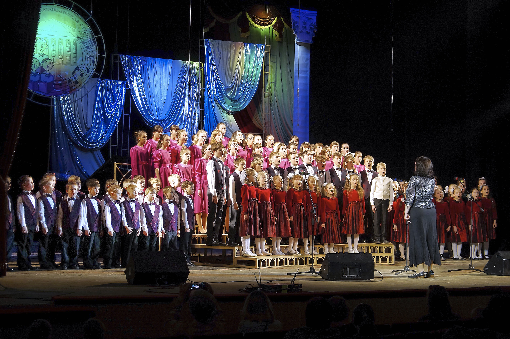
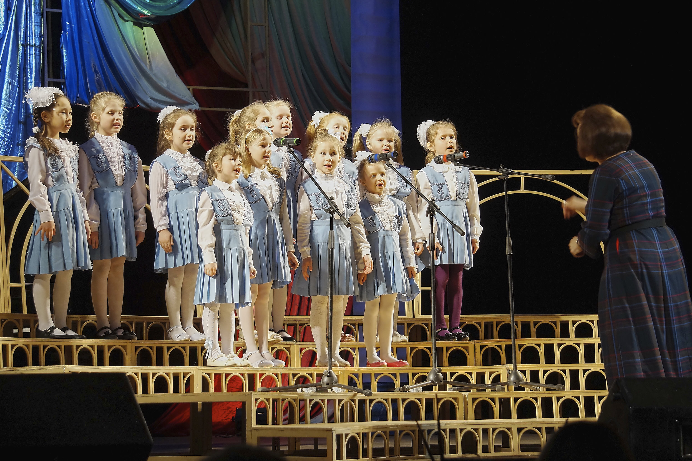
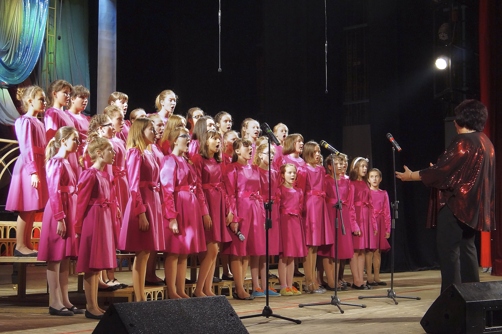

Детская музыкально-хоровая студия “Радонеж”
Музыкально-хоровая студия Дворца культуры основана в 1960 году. Педагогический коллектив – профессиональные педагоги с большим опытом работы. До сегодняшнего дня студия ведет плодотворную работу по эстетическому воспитанию подрастающего поколения, пропаганду и сохранение лучших традиций русской и зарубежной музыки.
Коллективы студии – лауреаты и дипломанты международных и городских конкурсов, фестивалей и смотров, выступают на лучших концертных площадках Сергиева Посада, Москвы и других городов России.
Обучение в хоровой студии основано на принципе ступенчатости: подготовительный, младший, старший хоры, хор мальчиков.
Руководитель студии – Каткова Наталья Юрьевна.Обучение в хоровой студии основано на принципе ступенчатости: подготовительный, младший, старший хоры, хор мальчиков.
Система образования рассчитана на 5-7 лет, по окончании выдается свидетельство. Обучение платное.
В подготовительный хор принимаются дети с 4,5 лет, проявившие интерес к музыкальным занятиям независимо от их способностей. Многолетняя практика работы с детьми доказала, что любой, на первый взгляд не очень музыкально одарённый ребёнок, занимающийся с раннего возраста, может научиться хорошо и правильно петь.
Занятия проходят два раза в неделю по 35 минут.
В подготовительный хор принимаются дети 6 лет, проявившие интерес к музыкальным занятиям. В процессе обучения дети развивают вокально-хоровые навыки и музыкальные способности, расширяют свой музыкально-художественный кругозор, учатся слушать дирижёра.
Занятия проходят два раза в неделю по 40 минут.
Обучение ведётся по комплексной методике, в которой широко используется современные методы музыкального воспитания. Занятия развивают музыкальную память, ладовый и гармонический слух, чувство ритма, стимулируют образное мышление и речь.
Старший хор «Радонеж» – неоднократный победитель региональных, областных, международных фестивалей и конкурсов. Старший хор является верхней ступенью студии. В старшем хоре обучаются дети от 11 до 18 лет. Занятия проходят 3 раза в неделю.